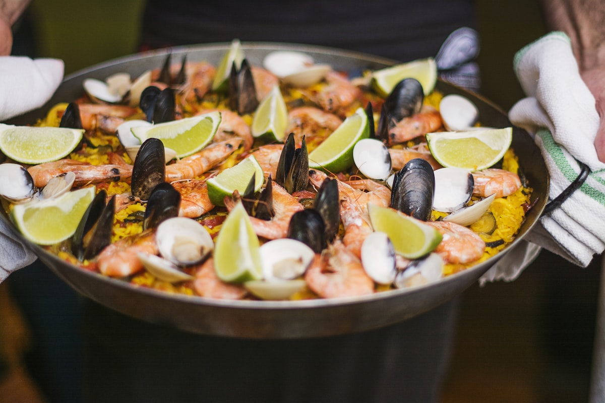

Weekend w Krakowie szlakiem obwarzanka

Dwa dni, jedno miasto i jeden niepozorny przewodnik: obwarzanek. Pokazujemy, jak przejść Kraków smakiem — od świtu na Rynku, przez Kazimierz, aż po wieczorną herbatę — tanio, pieszo i bez odhaczania atrakcji z listy. Bo to miasto najszybciej zdradza się przez zapach, nie przez bilet wstępu.
Jest wpół do siódmej. Rynek Główny należy jeszcze do gołębi i jednego zaspanego sprzedawcy obwarzanków, który ustawia swój błękitny wózek dokładnie tam, gdzie za godzinę zacznie się tłok. Kupuję jednego — ciepły, posypany makiem, za parę złotych — i to wystarczy za całe śniadanie. Tak właśnie zaczyna się ten weekend: nie od kasy biletowej, tylko od pieczywa.
Poranek, który należy do nielicznych
O tej porze miasto jest jeszcze szczere. W bocznej uliczce przy Małym Rynku otwiera się kawiarnia wielkości salonu — cztery stoliki, ekspres starszy ode mnie i właściciel, który wita stałych gości po imieniu. Kawa wypita tutaj smakuje inaczej niż ta sama kawa wypita w południe w pośpiechu; zupełnie jakby spokój był osobnym składnikiem. To pierwsza lekcja Krakowa: zejdź dwie przecznice z głównego szlaku, a ceny spadają, a klimat rośnie.
Kazimierz, czyli miasto w mieście
Po południu ruszam na Kazimierz — dzielnicę, w której zabytkowa synagoga sąsiaduje z barem serwującym hummus do późna. Tu historia nie leży pod szkłem, tylko miesza się z życiem: przy jednym stole ktoś je tradycyjną kuchnię żydowską, przy drugim student pochłania zapiekankę z okrągłego placu Nowego. Można tu wydać dużo albo prawie nic — Kazimierz nie ocenia. Najlepiej po prostu usiąść z herbatą i przez chwilę popatrzeć, jak dzielnica oddycha.
Dlaczego akurat tak?
Weekend w Krakowie nie musi być ani drogi, ani przeładowany. Wystarczą wygodne buty, trochę ciekawości i zgoda na to, że nie zobaczy się wszystkiego. Bo tego miasta nie zwiedza się z listą w ręku — ono samo prowadzi, od zapachu świeżego pieczywa po przypadkowo odkrytą podwórkową kawiarnię. I właśnie te przypadki zapamiętuje się najdłużej.
Źródła i inspiracje
- Reportaż oparty na własnych obserwacjach redakcji z weekendowego wyjazdu.
- Tło o obwarzanku krakowskim (oznaczenie geograficzne UE) — Wikipedia PL.